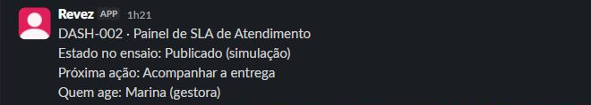
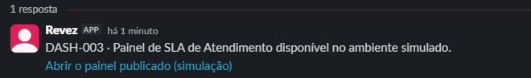

Mensagens diretas
Consulta, ajuste e aprovação
A consulta responde na DM de quem perguntou. Pareceres e pedidos de ajuste são enviados apenas a quem precisa agir.
Acompanhamento de entregas no Slack, da revisão ao comunicado. Cada consulta informa o estado da tarefa, a próxima ação e quem deve executá-la.
A IA extrai tarefas e responsáveis da proposta inicial. O Make valida permissões e versões, e o Google Sheets registra o estado da entrega e as transições.
Mensagens diretas
A consulta responde na DM de quem perguntou. Pareceres e pedidos de ajuste são enviados apenas a quem precisa agir.
Thread da entrega
A liderança autoriza o comunicado após a publicação simulada. O Revez envia uma única mensagem na thread da entrega.


O teste com duas contas confirmou que os detalhes da tarefa só ficam disponíveis para a conta vinculada. A outra conta recebe uma resposta neutra na própria DM.